|
|
| sea stars text index | photo index |
| Phylum Echinodermata > Class Stelleroida > Subclass Asteroidea > Genus Luidia |
| Eight-armed
Luidia sea star Luidia maculata Family Luidiidae updated Jul 2020 Where seen? This elegant large sea star has its stronghold on our Northern shores. Usually seen on soft, silty shores, near seagrass meadows and coral rubble. Usually alone, although sometimes, large numbers can be seen gathered together. It moves rapidly and is usually more active at night. It appears to be seasonal. Sometimes seen in large numbers and then none seen for some time. According to Marsh and Fromont, it is moderately common on sand or mud in Australia. Features: Diameter with arms to 12-20cm. 5 to 9, usually 8 arms. Arms are long, somewhat rounded in cross-section, and tapered to a sharp tip, edged with small sharp spines along the sides. The upper surface of the body is covered with special flat-topped, pillar-like structures called paxillae. The underside is pale, and from grooves along the arms emerge large tube feet with club-like, pointed tips. Colours and patterns on the upperside are highly variable in shades of greyish blue, to brown and beige, but usually with a darker star-shaped pattern in the centre, and dark irregular bars along the length of the arms. Sometimes mistaken for the Common sea star. The Common sea star has large tube feet with sucker-shaped tips, while the Eight-armed sand star has large tube feet with pointed tips. |
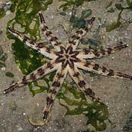 Changi, Jul 08 |
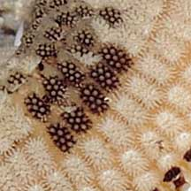 Flat-topped, pillar-like structures called paxillae |
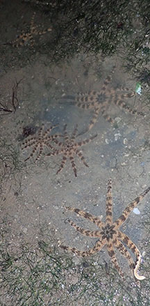 Sometimes, many are seen together. Changi, Jun 2019 |
| . 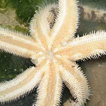 Underside. Pulau Sekudu, May 08 |
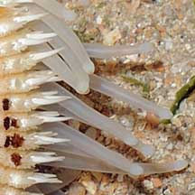 Pointed tube feet |
| Spawning position? Sometimes, the large sea star is seen with its central disk raised above the ground on all its arms. Is it in spawning position? |
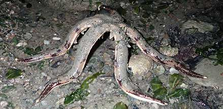 In spawning position? Changi, May 21 |
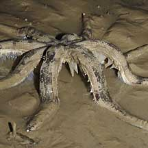 In spawning position? East Coast, Dec 08 |
| What does it eat? This sea star appears to be a serious predator! According to
Lane, it burrows in soft sediments and feeds on small buried animals
such as molluscs and other echinoderms. Coleman has a photo of this
sea star eating another sea star! According to Marsh and Fromont, it eats sea stars, sand dollars and heart urchins which are swallowed whole. It also eats clams and snails, crustaceans, worms, brittle stars and sea cucumbers. Status and threats: According to Lane, the Eight-armed sand star used to be common on our mainland shores. It is now listed as 'Endangered' on the Red List of threatened animals in Singapore. |
 |
| Eight-armed Luidia sea stars on Singapore shores |
On wildsingapore
flickr
|
| Other sightings on Singapore shores |
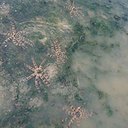 Cluster of many large sea stars. Pasir Ris, Dec 18 Shared by Carol Phillips on facebook. |
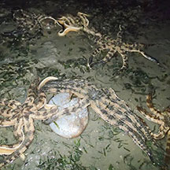 Cluster of many large sea stars. Pasir Ris, Jul 18 Shared by Richard Kuah on facebook. |
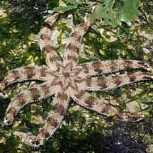 Pulau Sekudu, Jul 09 |
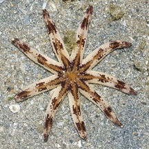 Pulau Semakau, Aug 11 |
Links
References
|